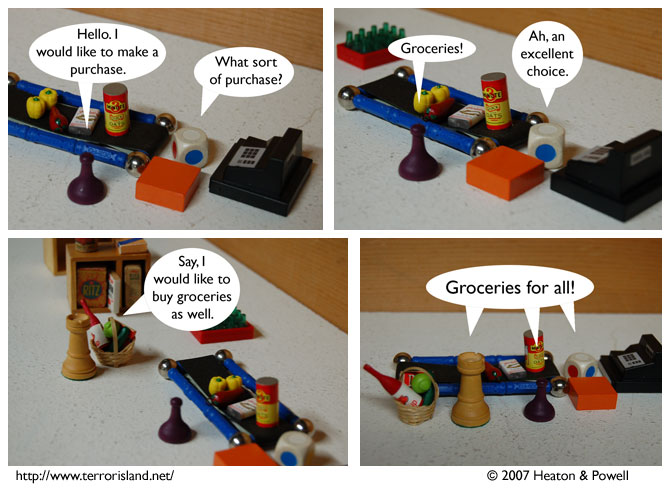

Strip #126
— April Fool’s Day (observed)
This is basically the opposite of canon.
Notes, Thoughts, &c.
Ben’s Notes
Hm. I wonder where we can possibly go from here.
Lewis’s Notes
I wish I knew what game that die portraying the store clerk is from. Games where the instructions read, “Roll the die and move the corresponding color of spaces” get many points in my book.
How many?
Purple, that’s how many.